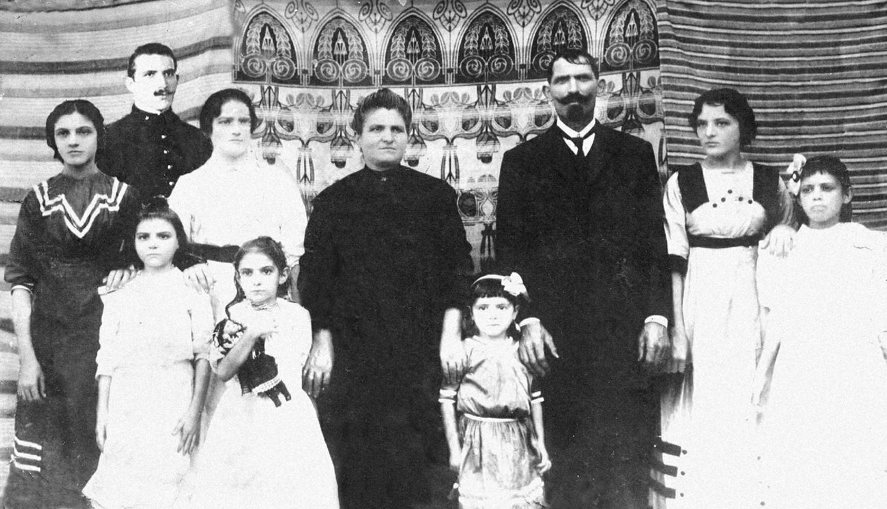

FAMÍLIA BARONI

E aqui o Clã dos Baroni, alguns anos depois de sua chegada ao Brasil. Bem à esquerda está o Guilherme, único nascido na Itália. Bem ao centro, ao lado do marido Alexandre, está "Vovó Rosa". À sua direita, está Otília, minha avó. Ao lado do patriarca, em um vestido com os ombros em preto, "Tia Paulina", falecida em janeiro de 2007 e única que restava viva desse grupo.